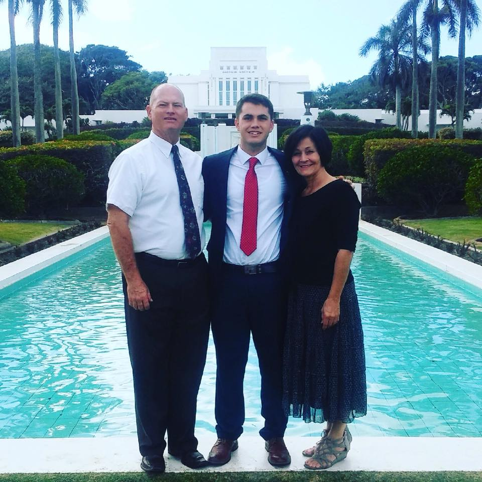

My name is Dallin Havens, I have to admit my knowledge about edible plants is very limited because of my own lack of experience on the subject. But I will tell you now my passion for this subject outweighs the stumblingblocks and hurdles that I know will come my way. I want this website to be a collective journey as we all find out how we can make better use of what mother nature is providing us. I grew up in a small farm town in California where people are constantly spending moneay on food and supplies that were prepared fpr them somewhere else. My dream is to spread the Knowledge that will allow anyone to find, harvest, grow, prepare and cook all their own foods, thus creating a sustainable Earth, a better diet and a better way of life.
These berries have taken time and effort from the plant to grow. Someone or something will eventually eat them. It is our opportunity to make good use of the abundant harvest mother nature brings forth unencouraged.

The websites creator is a member of the Church of Jesus Christ of Latter-Day Saints. He is currently attending BYU-Idaho and majoring in Electrical engineering.